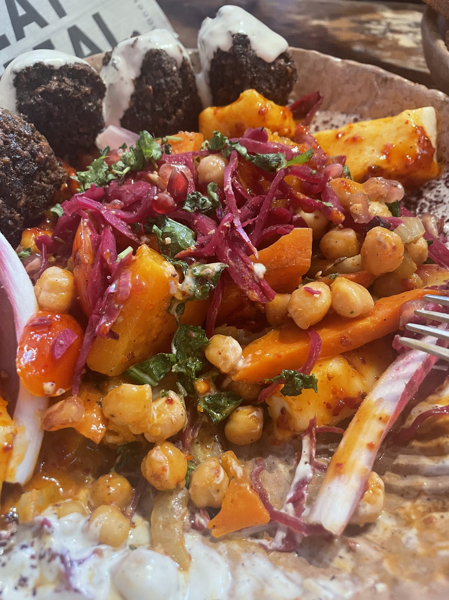

Bowl de falafel, calabaza asada y garbanzos
Ingredients
2×
- 400 g de calabaza
- 1 zanahoria
- aceite de oliva
- sal
- pimentón
- 200 g de garbanzos cocidos
- 6 falafel
- 150 g de yogur
- 1 cda de tahini
- zumo de 1/2 limón
- pan de pita
- col lombarda encurtida
- perejil

Preparación
Paso 1
Cortar 400 g de calabaza y 1 zanahoria en trozos, aliñar con aceite de oliva, sal y pimentón, y hornear 30min a 200ºC con 200 g de garbanzos cocidos los últimos 15min.
Paso 2
Calentar 6 falafel en el horno.
Paso 3
Mezclar 150 g de yogur con 1 cda de tahini, el zumo de 1/2 limón y sal.
Paso 4
Servir sobre pan de pita con la salsa de yogur, las verduras, los garbanzos, los falafel, col lombarda encurtida y perejil picado.